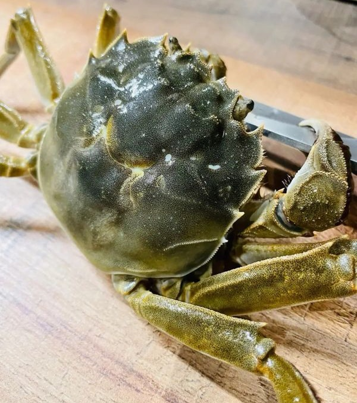

螃蟹不好吃
螃蟹，对于我这个北方内陆人来说，一直都是一种神秘的食物。三次尝试，三次的不知所措。带上这次，我对螃蟹的印象依旧模糊，也许更多的是对其复杂性的敬畏。

鲁迅说，第一个吃螃蟹的人必定是勇士，我深以为然。那个决定将这种多脚生物送入口中的人，一定拥有无与伦比的勇气和探索精神。想象一下，最初发现螃蟹时的人们是如何克服对这种奇异生物的恐惧，然后尝试并发现其可食用的。他们或许在艰难的试错中，一点点探索出螃蟹的美味所在。
但对我来说，每一次螃蟹摆在眼前，都是一场挑战。它们外表坚硬，似乎隐藏着无数秘密，而我却只能束手无策地面对。第一次，我犹豫不决，不知从何下口；第二次，尝试摆弄着螯，却频频遭到无情的反击；第三次，更像是在和一位不熟悉的工艺品较劲，除了些微的肉，却没能品尝到更多。
螃蟹在餐桌上的优雅摆放，似乎与其野性十足的外表形成了鲜明对比。从那盘螃蟹身上，我看到了别人娴熟地挥舞着锤子和钳子，轻松地剥开蟹壳，取出丰盛的肉。而我，则像是面对一门未解之谜，不知如何下手。
或许，对于北方人来说，对螃蟹的陌生感正是一种美好。在每一次碰触中，我仿佛能够重新审视这个世界，发现那些隐藏在食物背后的文化与习俗。而尽管我对螃蟹的品尝历程充满了困惑与挣扎，但我却体会到了尊重和欣赏它所蕴含的独特之处。
或许，尝试螃蟹并不只是一次简单的美食探索，更是一次对勇气和耐心的考验。第一个吃螃蟹的人是勇士，而我，也在每一次失败和困惑中，慢慢地成长着，学会尊重和感悟这份美好。